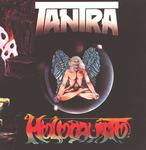

| Artist: | Tantra |
| Title: | Holocausto |
| Label: | Musea Records FGBG 4289.AR |
| Length(s): | 43 minutes |
| Year(s) of release: | 1979/2002 |
| Month of review: | [05/2002] |
| 1) | Om | 8.47 |
| 2) | Holocausto/Ultimo Raio Do Astro Dei | 10.53 |
| 3) | Zephyrus | 2.50 |
| 4) | Talisma | 8.44 |
| 5) | Ara | 4.54 |
| 6) | Pi | 7.29 |
The main track is the title track Holocausto/Ultimo Raio Do Astro Dei. It opens with grand majestic guitars and keyboards. One might be thinking of Genesis here or maybe Ange. The overall sound is quite dark with male choirs and tenseness in the music. The vocal parts are manic, and you might be thinking of a variant of Hammill in VDGG here. Then the singer takes it easier again, in a good vocal part, with appealing and memorable vocal melodies. Note that some parts sound very much like the title song of the first King Crimson record. The instrumental continuation is varied: sometimes melodic with a strong bass presence and somewhat Arabic in melody, sometimes fast paced jazzrock. Especially the drummer gets to have his say here, interjecting the music with almost random outbursts. I do wonder who is playing that sax here, oh wait it is listed as clarinet. Well, you could have fooled me.
Zephyrus is a rtaher short track opening with sitar and keyboard effects, in addition to throaty Tibetan singing. Then the other instruments join in for a powerful and plodding piece of dark, mysterious rock. Very nice.
On Talisma the sound is clearer, friendlier. More in the jazzrock vein, the vocals however are rather melodious and friendly. Halfway, the music gains momentum and the vocalist gains fire. I like the way the piano is used on this track, but some of the parts do little to me, they are too standard progressive. The guitar playing owes quite a bit to Genesis. Although I cannot say I like the track as a whole it does contain some very worthwhile parts such as when around the seven minute mark the bombast gets back into the music: the melody on guitar is grand and the tubular bells are used to good effect.
Ara is a very melodic piece with clarinet and guitar, mainly. Drums and keyboards are also present, but more in the back. The vocal parts are rather soothing and accompanied by piano and acoustic guitar. The changes halfway is one typical of Genesis. The music gets to be quite playful here, think of I Know What I Like...
Pi is a thematic piece, and a strong theme it is, the strongest on the album. The guitar is more in a jazzrock vein. During the track it fights its duels with the rather bleepy sounding keyboards. Time for some rest as we move into a contemplative piano part. A nice change over. The keyboards continue to sound a bit strange. Drums and guitar take over the music soon after with a more thematic approach, the vocals are however quite poppy. The songs ends with the theme it started with.